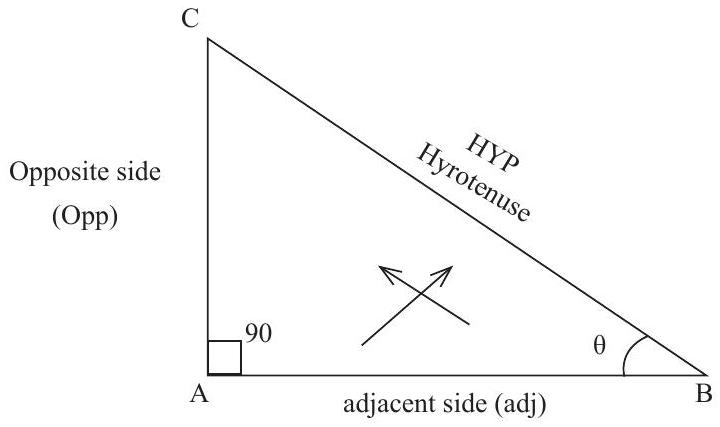
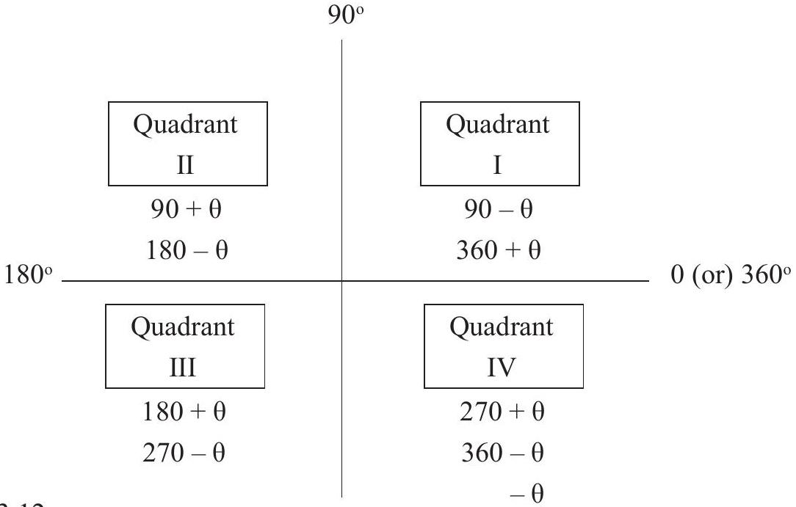

UNIT - III: TRIGONOMETRY
Unit 3 Overview
3.1 Expansion of \(\sin (A \pm B), \cos (A \pm B)\) and \(\tan (A \pm B)\) (without proof). Problems using above expansions.
3.2 Trigonometrical ratios of multiple angles of 2A and 3A and sub-multiple angles. Simple problems.
3.3 Trigonometrical ratios of sum and product formulae. Simple problems.
Introduction:
Trigonometry is one of the oldest branches of Mathematics. The word Trigonometry is derived from the Greek words ‘Trigonon’ and ‘metron’ means measurement of angles. In olden days Trigonometry was mainly used as a tool for studying astronomy. In earlier stages Trigonometry was mainly concerned with angles of a triangle. But now it has its applications in various branches of science such as surveying, engineering, navigations etc. For the study of higher mathematics, knowledge of Trigonometry is essential.
Trigonometrical ratios:
There are six Trigonometrical ratios sine, cosine, tangent, cotangent, secant and cosecant shortly written as \(\sin \theta, \cos \theta, \tan \theta, \cot \theta, \sec \theta\) and \(\operatorname{cosec} \theta\).
The side opposite to angle \(\theta\) (Theta) is called opposite side. The side opposite to \(90^{\circ}\) is called Hypotenuse. The other side is adjacent side.
\(\cos \theta=\frac{\text { adj }}{\text { Hyp }} \quad \sec \theta=\frac{1}{\cos \theta}=\frac{\text { Hyp }}{\text { adj }}\)
\(\tan \theta=\frac{\text { Opp }}{\text { adj }} \quad \cot \theta=\frac{1}{\tan \theta}=\frac{\text { adj }}{\text { opp }}\)
Fundamental trigonometrical identities
- \(\sin ^{2} \theta+\cos ^{2} \theta=1\)
- \(1+\tan ^{2} \theta=\sec ^{2} \theta\)
- \(1+\cot ^{2} \theta=\operatorname{cosec}^{2} \theta\)
Trigonometrical ratios of known angles
| \(\theta\) | 0 | 30 | 45 | 60 | 90 |
|---|---|---|---|---|---|
| \(\sin \theta\) | 0 | \(\frac{1}{2}\) | \(\frac{1}{\sqrt{2}}\) | \(\frac{\sqrt{3}}{2}\) | 1 |
| \(\cos \theta\) | 1 | \(\frac{\sqrt{3}}{2}\) | \(\frac{1}{\sqrt{2}}\) | \(\frac{1}{2}\) | 0 |
| \(\tan \theta\) | 0 | \(\frac{1}{\sqrt{3}}\) | 1 | \(\sqrt{3}\) | \(\infty\) |
Signs and Allied Angles
Signs of Trigonometrical ratios
| Quadrant | Signs of ratios | Remember |
|---|---|---|
| I | All are +ve | All |
| II | \(\operatorname{Sin} \theta\) and \(\operatorname{cosec} \theta=\frac{1}{\sin \theta}\) are +ve; Other ratios are -ve . | Silver |
| III | \(\tan \theta\) and \(\cot \theta\) are +ve ; other ratios are - ve. | Tea |
| IV | \(\cos \theta\) and \(\sec \theta=\frac{1}{\cos \theta}\) are +ve ; other ratios are -ve . | Cups |
Trigonometrical ratios of related or allied Angles:
The basic angle is \(\theta\) and angles associated with \(\theta\) by a right angle (or) its multiples are called related angle or allied angles. Thus \(90 \pm \theta, 180 \pm \theta, 270 \pm \theta, 360 \pm \theta\) are known as related or allied angles.
Trigonometrical ratios of any Angle
Working Rule for \(180 \pm \theta\) and \(360 \pm \theta\)
- Determine the sign.
- Change of ratio-Do not change
Refer Fig.3.12
| Ratio \(180^{\circ}\) (or) \(360^{\circ}\) | Falls in Quadrant Refer Fig.3.12 | Sign Refer Table 3.11 | Change of ratio (Do not change) |
|---|---|---|---|
| 1) \(\sin (180-\theta)\) | II (Silver) | \(\sin \theta\) is +ve | \(+\sin \theta\) |
| 2) \(\tan (180+\theta)\) | III (Tea) | \(\tan \theta\) is +ve | \(+\tan \theta\) |
| 3) \(\sec (360-\theta)\) | IV (Cups) | \(\sec \theta\) is +ve | \(+\sec \theta\) |
| 4) \(\tan (180-\theta)\) | II (Silver) | \(\tan \theta\) is - ve | \(-\tan \theta\) |
| 5) \(\cos (180+\theta)\) | III (Tea) | \(\cos \theta\) is - ve | \(-\cos \theta\) |
| 6) \(\operatorname{cosec}(360-\theta)\) | IV (Cups) | \(\operatorname{cosec} \theta\) is - ve | \(-\operatorname{cosec} \theta\) |
Working Rule for \(90 \pm \boldsymbol{\theta}\) and \(270 \pm \boldsymbol{\theta}\)
- Determine the sign
- Change of ratio as follows:
\(\sin \theta\) will change as \(\cos \theta\) and \(\cos \theta\) will change as \(\sin \theta\)
\(\tan \theta\) will change as \(\cot \theta\) and \(\cot \theta\) will change as \(\tan \theta\)
\(\sec \theta\) will change as \(\operatorname{cosec} \theta\) and \(\operatorname{cosec} \theta\) will change as \(\sec \theta\)
| Ratio \(90^{\circ}\) (or) \(270^{\circ}\) | Refer Fig. 3.12 Quadrant | Referable 3.11 Sign | Change of ratio |
|---|---|---|---|
| 1) \(\sin (90-\theta)\) | I (All) | \(\sin \theta\) is +ve | \(+\cos \theta\) |
| 2) \(\operatorname{cosec}(90+\theta)\) | II (Silver) | \(\operatorname{cosec} \theta\) is +ve | \(+\sec \theta\) |
| 3) \(\cot (270-\theta)\) | III (Tea) | \(\cot \theta\) is +ve | \(+\tan \theta\) |
| 4) \(\sin (270+\theta)\) | IV (Cups) | \(\sin \theta\) is - ve | \(-\cos \theta\) |
| 5) \(\tan (270+\theta)\) | IV (Cups) | \(\tan \theta\) is - ve | \(-\cot \theta\) |
| 6) \(\cos (270-\theta)\) | III (Tea) | \(\cos \theta\) is - ve | \(-\sin \theta\) |
Examples:
- \(\sin 180^{\circ}=\sin \left(180^{\text{III}}+0\right)=-\sin 0^{\circ}=0\)
- \(\cos 180^{\circ}=\cos \left(180^{\text{III}}+0\right)=-\cos 0^{\circ}=-1\)
- \(\tan 225^{\circ}=\tan (180+45)=+\tan 45^{\circ}=1\)
- \(\sin 120^{\circ}=\sin \left(180^{\text{II}}-60\right)=+\sin 60^{\circ}=\frac{\sqrt{3}}{2}\)
- \(\cos 120^{\circ}=\cos (180-60)=-\cos 60^{\circ}=-\frac{1}{2}\)
- \(\cot 210=\cot (180+30)=+\cot 30^{\circ}=\frac{1}{\left(\frac{1}{\sqrt{3}}\right)}=\sqrt{3}\)
- \(\sin 270^{\circ} = \begin{cases} \sin(180^{\text{III}}+90) = -\sin 90^{\circ} = -1 \\ \sin(270^{\text{IV}}+0) = -\cos 0 = -1 \end{cases}\)
- \(\cos 240 = \begin{cases} \cos(180+60) = -\cos 60 = -\frac{1}{2} \\ \cos(270-30) = -\sin 30 = -\frac{1}{2} \end{cases}\)
- \(\sin 600 = \sin(360+240) = \sin 240=\sin (180+60)=-\sin 60=-\frac{\sqrt{3}}{2}\) (Remove multiples of \(360^{\circ}\))
- \(\cos 720 = \cos(2 \times 360 + 0) = \cos 0=1\) (Remove multiples of \(360^{\circ}\))
3.1 COMPOUND ANGLES
Compound Angles:
If an angle is expressed as the algebraic sum or difference of two or more angles, then it is called compound angle.
Formulae:
- \(\sin (A+B)=\sin A \cos B+\cos A \sin B\)
- \(\sin (A-B)=\sin A \cos B-\cos A \sin B\)
- \(\cos (A+B)=\cos A \cos B-\sin A \sin B\)
- \(\cos (A-B)=\cos A \cos B+\sin A \sin B\)
- \(\tan (A+B)=\frac{\tan A+\tan B}{1-\tan A \tan B}\)
- \(\tan (A-B)=\frac{\tan A-\tan B}{1+\tan A \tan B}\)
Results:
1. Prove that \(\sin (A+B) \sin (A-B)=\sin ^{2} A-\sin ^{2} B\)
Proof:
\(\sin (A+B)=\underbrace{\sin A \cos B}_{x}+\underbrace{\cos A \sin B}_{y}=x+y\) (say)
\(\sin (A-B)=\underbrace{\sin A \cos B}_{x}-\underbrace{\cos A \sin B}_{y}=x-y\)
LHS \(= \sin (A+B) \sin (A-B)=(x+y)(x-y)=x^{2}-y^{2}\)
\( =(\sin A \cos B)^{2}-(\cos A \sin B)^{2}\)
\( =\sin ^{2} A \cos ^{2} B-\cos ^{2} A \sin ^{2} B \)
\( =\sin ^{2} A\left(1-\sin ^{2} B\right)-\left(1-\sin ^{2} A\right) \sin ^{2} B \quad\) (using \(\cos^2 B = 1-\sin^2 B\) and \(\cos^2 A = 1-\sin^2 A\))
\( =\sin ^{2} A-\sin ^{2} A \sin ^{2} B-\sin ^{2} B+\sin ^{2} A \sin ^{2} B \)
\( =\sin ^{2} A-\sin ^{2} B=\) RHS
2. Prove that \(\cos (A+B) \cos (A-B)=\cos ^{2} B-\sin ^{2} A=\cos ^{2} A-\sin ^{2} B\).
Proof:
\(\cos (A+B)=\underbrace{\cos A \cos B}_{x}-\underbrace{\sin A \sin B}_{y}=x-y\)
\(\cos (A-B)=\underbrace{\cos A \cos B}_{x}+\underbrace{\sin A \sin B}_{y}=x+y\)
LHS \(=\cos (A+B) \cos (A-B)\)
\( =(x-y)(x+y)=x^{2}-y^{2}\)
\( =(\cos A \cos B)^{2}-(\sin A \sin B)^{2}\)
\( =\cos ^{2} A \cos ^{2} B-\sin ^{2} A \sin ^{2} B \)
\( =\left(1-\sin ^{2} A\right) \cos ^{2} B-\sin ^{2} A\left(1-\cos ^{2} B\right) \)
\( =\cos ^{2} B-\sin ^{2} A \cos ^{2} B-\sin ^{2} A+\sin ^{2} A \cos ^{2} B \)
\( =\cos ^{2} B-\sin ^{2} A=\) RHS
Also, \(\cos ^{2} B-\sin ^{2} A = \left(1-\sin ^{2} B\right)-\left(1-\cos ^{2} A\right)\)
\( =1-\sin ^{2} B-1+\cos ^{2} A\)
\( =\cos ^{2} A-\sin ^{2} B\)
3.1 WORKED EXAMPLES
PART - A
1. Find the value of \(\sin 65^{\circ} \cos 25^{\circ}+\cos 65^{\circ} \sin 25^{\circ}\).
Solution:
\(\sin 65^{\circ} \cos 25^{\circ}+\cos 65^{\circ} \sin 25^{\circ}\)
\(=\sin \left(65^{\circ}+25^{\circ}\right)=\sin 90^{\circ}=1\)
2. Find the value of \(\sin 40^{\circ} \cos 10^{\circ}-\cos 40^{\circ} \sin 10^{\circ}\).
Solution:
\(\sin 40^{\circ} \cos 10^{\circ}-\cos 40^{\circ} \sin 10^{\circ}\)
\(=\sin \left(40^{\circ}-10^{\circ}\right)=\sin 30^{\circ}=\frac{1}{2}\).
3. Find the value of \(\cos 50^{\circ} \cos 40^{\circ}-\sin 50^{\circ} \sin 40^{\circ}\).
Solution:
\(\cos 50^{\circ} \cos 40^{\circ}-\sin 50^{\circ} \sin 40^{\circ}\)
\(=\cos \left(50^{\circ}+40^{\circ}\right)=\cos 90^{\circ}=0\)
4. What is the value of \(\cos 70^{\circ} \cos 10^{\circ}+\sin 70^{\circ} \sin 10^{\circ}\)?
Solution:
\(\cos 70^{\circ} \cos 10^{\circ}+\sin 70^{\circ} \sin 10^{\circ}\)
\(=\cos \left(70^{\circ}-10^{\circ}\right)=\cos 60^{\circ}=\frac{1}{2}\)
5. Find the value of \(\frac{\tan 20^{\circ}+\tan 25^{\circ}}{1-\tan 20^{\circ} \tan 25^{\circ}}\).
Solution:
\(\frac{\tan 20^{\circ}+\tan 25^{\circ}}{1-\tan 20^{\circ} \tan 25^{\circ}}\)
\(=\tan \left(20^{\circ}+25^{\circ}\right)=\tan 45^{\circ}=1\)
6. Find the value of \(\frac{\tan 135^{\circ}-\tan 75^{\circ}}{1+\tan 135^{\circ} \tan 75^{\circ}}\).
Solution:
\(\frac{\tan 135^{\circ}-\tan 75^{\circ}}{1+\tan 135^{\circ} \tan 75^{\circ}}\)
\(=\tan \left(135^{\circ}-75^{\circ}\right)=\tan 60^{\circ}=\sqrt{3}\)
PART - B
1. Find the value of \(\cos \left(60^{\circ}-\mathrm{A}\right) \cos \left(30^{\circ}+\mathrm{A}\right)-\sin \left(60^{\circ}-\mathrm{A}\right) \sin \left(30^{\circ}+\mathrm{A}\right)\).
Solution:
\(\cos \left(60^{\circ}-\mathrm{A}\right) \cos \left(30^{\circ}+\mathrm{A}\right)-\sin \left(60^{\circ}-\mathrm{A}\right) \sin \left(30^{\circ}+\mathrm{A}\right)\)
Let \(x = 60^\circ - A\) and \(y = 30^\circ + A\). Then \(x+y = 90^\circ\).
The expression is \(\cos x \cos y-\sin x \sin y = \cos(x+y)\)
\(=\cos(90^\circ)=0\)
2. Find the value of \(\sin 15^{\circ}\).
Solution:
\(\sin 15^{\circ}=\sin \left(45^{\circ}-30^{\circ}\right)\)
\(=\sin 45^{\circ} \cos 30^{\circ}-\cos 45^{\circ} \sin 30^{\circ}\)
\(=\frac{1}{\sqrt{2}} \times \frac{\sqrt{3}}{2}-\frac{1}{\sqrt{2}} \times \frac{1}{2}\)
\(=\frac{\sqrt{3}}{2 \sqrt{2}}-\frac{1}{2 \sqrt{2}}=\frac{\sqrt{3}-1}{2 \sqrt{2}}\)
3. Find the value of \(\cos 75^{\circ}\).
Solution:
\(\cos 75^{\circ}=\cos \left(45^{\circ}+30^{\circ}\right)\)
\(=\cos 45^{\circ} \cos 30^{\circ}-\sin 45^{\circ} \sin 30^{\circ}\)
\(=\frac{1}{\sqrt{2}} \times \frac{\sqrt{3}}{2}-\frac{1}{\sqrt{2}} \times \frac{1}{2}\)
\(=\frac{\sqrt{3}}{2 \sqrt{2}}-\frac{1}{2 \sqrt{2}}=\frac{\sqrt{3}-1}{2 \sqrt{2}}\)
4. Prove that \(\frac{\sin (A+B)+\sin (A-B)}{\cos (A+B)+\cos (A-B)}=\tan A\).
Solution:
LHS \(=\frac{\sin A \cos B+\cos A \sin B+\sin A \cos B-\cos A \sin B}{\cos A \cos B-\sin A \sin B+\cos A \cos B+\sin A \sin B}\)
\(=\frac{2 \sin A \cos B}{2 \cos A \cos B}\)
\(=\frac{\sin A}{\cos A}=\tan A=\) RHS
5. Prove that \(\sin (A+B) \sin (A-B)+\sin (B+C) \sin (B-C)+\sin (C+A) \sin (C-A)=0\).
Solution:
LHS \(=\sin (A+B) \sin (A-B)+\sin (B+C) \sin (B-C)+\sin (C+A) \sin (C-A)\)
\(=\left(\sin ^{2} A-\sin ^{2} B\right)+\left(\sin ^{2} B-\sin ^{2} C\right)+\left(\sin ^{2} C-\sin ^{2} A\right)=0=\) RHS
6. If \(\tan A=\frac{1}{2}\) and \(\tan B=\frac{1}{3}\) find the value of \(\tan (A+B)\).
Solution:
\(\tan (A+B) =\frac{\tan A+\tan B}{1-\tan A \tan B}\)
\(=\frac{\frac{1}{2}+\frac{1}{3}}{1-\frac{1}{2} \times \frac{1}{3}}\)
\(=\frac{\frac{3+2}{6}}{1-\frac{1}{6}}=\frac{\frac{5}{6}}{\frac{6-1}{6}}=\frac{\frac{5}{6}}{\frac{5}{6}}=1\)
7. Find the value of \(\tan 105^{\circ}\), without using tables.
Solution:
\(\tan 105^{\circ}=\tan \left(60^{\circ}+45^{\circ}\right)\)
\(=\frac{\tan 60^{\circ}+\tan 45^{\circ}}{1-\tan 60^{\circ} \tan 45^{\circ}}\)
\(=\frac{\sqrt{3}+1}{1-\sqrt{3} \times 1}=\frac{\sqrt{3}+1}{1-\sqrt{3}}\)
8. Prove that \(\tan 20^{\circ}+\tan 25^{\circ}+\tan 20^{\circ} \tan 25^{\circ}=1\).
Solution:
\(20^{\circ}+25^{\circ}=45^{\circ}\)
\(\tan \left(20^{\circ}+25^{\circ}\right)=\tan 45^{\circ}\)
\(\frac{\tan 20^{\circ}+\tan 25^{\circ}}{1-\tan 20^{\circ} \tan 25^{\circ}}=1\)
Cross multiplying, \(\tan 20^{\circ}+\tan 25^{\circ}=1-\tan 20^{\circ} \tan 25^{\circ}\)
\(\tan 20^{\circ}+\tan 25^{\circ}+\tan 20^{\circ} \tan 25^{\circ}=1\)
PART - C
1. If A and B are acute and if \(\sin A=\frac{1}{\sqrt{10}}\) and \(\sin B=\frac{1}{\sqrt{5}}\) prove that \(A+B=\frac{\pi}{4}\).
Solution:
Given: \(\quad \sin A=\frac{1}{\sqrt{10}}\) and \(\sin B=\frac{1}{\sqrt{5}}\)
\(\cos A=\sqrt{1-\sin ^{2} A} = \sqrt{1-\left(\frac{1}{\sqrt{10}}\right)^{2}} = \sqrt{1-\frac{1}{10}} = \sqrt{\frac{9}{10}}=\frac{3}{\sqrt{10}}\)
\(\cos B=\sqrt{1-\sin ^{2} B} = \sqrt{1-\left(\frac{1}{\sqrt{5}}\right)^{2}} = \sqrt{1-\frac{1}{5}} = \sqrt{\frac{4}{5}}=\frac{2}{\sqrt{5}}\)
\(\sin (A+B)=\sin A \cos B+\cos A \sin B\)
\(=\frac{1}{\sqrt{10}} \times \frac{2}{\sqrt{5}}+\frac{3}{\sqrt{10}} \times \frac{1}{\sqrt{5}}\)
\(=\frac{2}{\sqrt{50}}+\frac{3}{\sqrt{50}}\)
\(=\frac{5}{\sqrt{50}}=\frac{5}{\sqrt{25 \times 2}}=\frac{5}{5 \sqrt{2}}\)
\(\sin (A+B) =\frac{1}{\sqrt{2}}=\sin 45^{\circ}\)
\(A+B =45^{\circ}=\frac{180^{\circ}}{4}=\frac{\pi}{4}\)
2. If A and B are acute and if \(\cos A=\frac{1}{7}\) and \(\cos B=\frac{13}{14}\), prove that \(A-B=60^{\circ}=\frac{\pi}{3}\).
Solution:
Given: \(\cos \mathrm{A}=\frac{1}{7} \quad\) and \(\quad \cos \mathrm{B}=\frac{13}{14}\)
\(\sin A=\sqrt{1-\cos ^{2} A} = \sqrt{1-\left(\frac{1}{7}\right)^{2}} = \sqrt{1-\frac{1}{49}} = \sqrt{\frac{48}{49}}=\frac{\sqrt{16 \times 3}}{7}=\frac{4 \sqrt{3}}{7}\)
\(\sin B=\sqrt{1-\cos ^{2} B} = \sqrt{1-\left(\frac{13}{14}\right)^{2}} = \sqrt{1-\frac{169}{196}} = \sqrt{\frac{27}{196}}=\frac{\sqrt{9 \times 3}}{14}=\frac{3 \sqrt{3}}{14}\)
\(\cos (A-B)=\cos A \cos B+\sin A \sin B\)
\(=\frac{1}{7} \times \frac{13}{14}+\frac{4 \sqrt{3}}{7} \times \frac{3 \sqrt{3}}{14}\)
\(=\frac{13}{98}+\frac{12 \times 3}{98}\)
\(=\frac{13+36}{98}=\frac{49}{98}=\frac{1}{2}\)
\(\cos (A-B) =\frac{1}{2}=\cos 60^{\circ}\)
\(A-B =60^{\circ}=\frac{180^{\circ}}{3}=\frac{\pi}{3}\)
3. If \(A+B=45^{\circ}\), prove that \((1+\tan A)(1+\tan B)=2\) and hence deduce the value of \(\tan 22 \frac{1}{2}^{\circ}\).
Solution:
Given: \(A+B=45^{\circ}\)
Taking tan on both sides
\(\tan (A+B)=\tan 45^{\circ}\)
\(\frac{\tan A+\tan B}{1-\tan A \tan B}=1\)
\(\tan A+\tan B=1-\tan A \tan B\)
\(\tan A+\tan B+\tan A \tan B=1\) .....(1)
LHS \( =(1+\tan A)(1+\tan B)\)
\( =1+\tan B+\tan A+\tan A \tan B \)
\( =1 + (\tan A + \tan B + \tan A \tan B) \)
\( =1+1\) using (1)
\( =2=\) RHS
Deduction:
Put \(A=22 \frac{1}{2}^{\circ}, B=22 \frac{1}{2}^{\circ}\). Then \(A+B=22 \frac{1}{2}^{\circ}+22 \frac{1}{2}^{\circ}=45^{\circ}\).
\((1+\tan 22 \frac{1}{2}^{\circ})(1+\tan 22 \frac{1}{2}^{\circ})=2\)
Let \(x = 1 + \tan 22 \frac{1}{2}^{\circ}\)
\(x^{2}=2\)
\(x=\sqrt{2}\)
\(1+\tan 22 \frac{1}{2}^{\circ}=\sqrt{2}\)
\(\tan 22 \frac{1}{2}^{\circ}=\sqrt{2}-1\)
4. If A and B are acute angle and if \(\tan A=\frac{n}{n+1}\) and \(\tan B=\frac{1}{2 n+1}\), show that \(A+B=\frac{\pi}{4}\).
Solution:
Given: \(\tan A=\frac{n}{n+1}\) and \(\tan B=\frac{1}{2 n+1}\)
\(\tan (A+B) =\frac{\tan A+\tan B}{1-\tan A \tan B}\)
\(=\frac{\frac{n}{(n+1)}+\frac{1}{(2 n+1)}}{1-\frac{n}{(n+1)} \times \frac{1}{(2 n+1)}}\)
\(=\frac{\frac{n(2 n+1)+1(n+1)}{(n+1)(2 n+1)}}{\frac{(n+1)(2 n+1)-n \times 1}{(n+1)(2 n+1)}}\)
\(=\frac{2 n^{2}+n+n+1}{2 n^{2}+n+2 n+1-n}\)
\(=\frac{2 n^{2}+2 n+1}{2 n^{2}+2 n+1}=1\)
\(\tan (A+B) =1=\tan 45^{\circ}\)
\(A+B =45^{\circ}=\frac{180^{\circ}}{4}=\frac{\pi}{4}\)
5. If \(\tan A-\tan B=p\) and \(\cot B-\cot A=q\), show that \(\cot (A-B)=\frac{1}{p}+\frac{1}{q}\).
Solution:
RHS \(=\frac{1}{p}+\frac{1}{q}\)
\(=\frac{1}{\tan \mathrm{A}-\tan \mathrm{B}}+\frac{1}{\cot \mathrm{B}-\cot \mathrm{A}}\)
\(=\frac{1}{\tan \mathrm{A}-\tan \mathrm{B}}+\frac{1}{\frac{1}{\tan \mathrm{B}}-\frac{1}{\tan \mathrm{A}}}\)
\(=\frac{1}{\tan \mathrm{A}-\tan \mathrm{B}}+\frac{1}{\frac{\tan \mathrm{A}-\tan \mathrm{B}}{\tan \mathrm{A} \tan \mathrm{B}}}\)
\(=\frac{1}{\tan A-\tan B} + \frac{\tan A \tan B}{\tan A-\tan B}\)
\(=\frac{1+\tan \mathrm{A} \tan \mathrm{B}}{\tan \mathrm{A}-\tan \mathrm{B}}\)
\(=\frac{1}{\frac{\tan \mathrm{A}-\tan \mathrm{B}}{1+\tan \mathrm{A} \tan \mathrm{B}}} = \frac{1}{\tan(A-B)}\)
\(=\cot (\mathrm{A}-\mathrm{B})\) = LHS